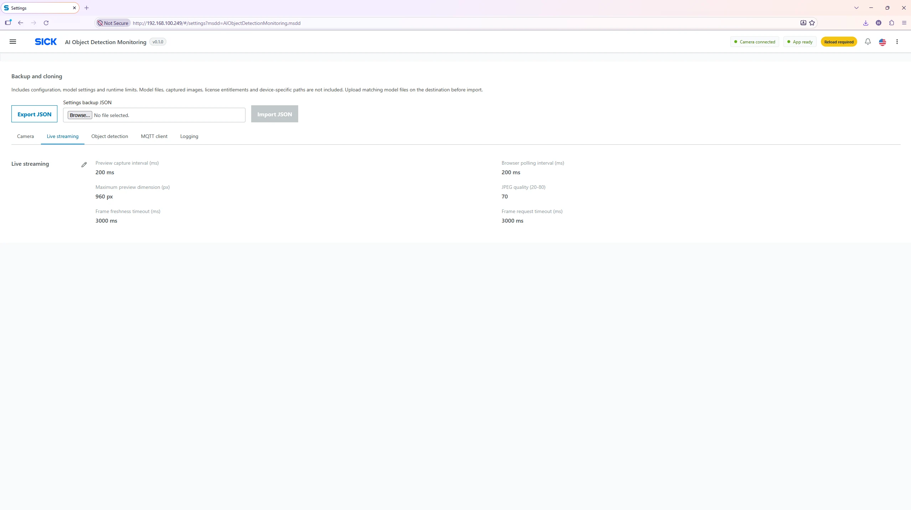

Settings → Live streaming
Live Streaming Settings
Control how frequently the on-camera preview is prepared and how often the browser requests a new frame. These options primarily affect UI smoothness, bandwidth and perceived latency.

Parameter reference
| Setting | Function / supplied value |
|---|---|
| Capture interval (ms) | Time between preparation of preview frames; 100–10,000 ms. Optimized 200 ms. |
| Polling interval (ms) | How often the browser requests a preview frame; 100–10,000 ms. Optimized 200 ms. |
| Max width (px) | Resize cap for preview image width, 160–1,280 px. Optimized 960 px. |
| JPEG quality | Preview compression quality, 20–80. Optimized 70; higher may increase bandwidth. |
| Stale timeout (ms) | After this time without a fresh frame, preview is considered stale, 1,000–60,000 ms. Optimized 3,000 ms. |
| Request timeout (ms) | Maximum wait for an individual frame request, 1,000–15,000 ms. Optimized 3,000 ms. |
Typical tuning choices
Start with the optimized 200 ms / 960 px / JPEG 70. If the UI is slow on a weak connection, increase polling/capture intervals or reduce preview resolution/quality. Avoid setting freshness timeouts below what the preview pipeline can normally meet. Preview changes require saving and reloading the app.
Key distinction: These controls do not set the actual
model inference cadence. Use
Object Detection Settings
for that, and the Camera tab for
acquisition FPS.